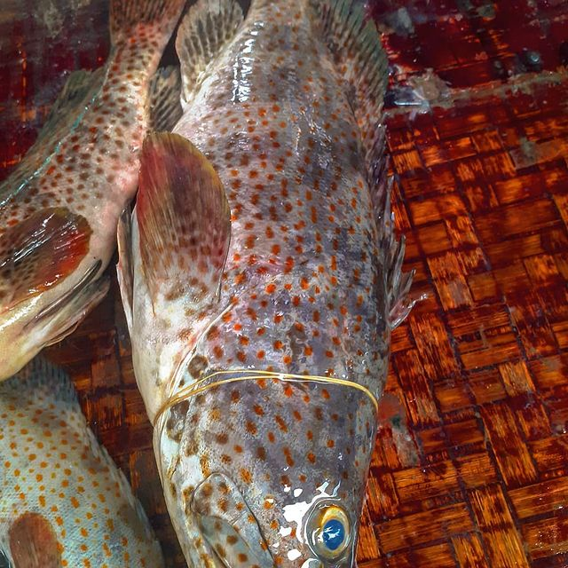

Mchuzi wa Samaki
Swahili Fish Curry
The everyday coastal curry — the one that gets made on a Tuesday without anyone thinking about it. Tewa is the classic choice because it flakes into large clean pieces that soak up sauce instead of dissolving into it.

Ingredients
- 800 g tewa or changu, cut into thick pieces
- 400 ml coconut milk
- 2 onions, sliced
- 4 tomatoes, chopped
- 4 cloves garlic, crushed
- 1 thumb ginger, grated
- 1 tbsp curry powder
- 1 tsp cumin
- 1 tsp coriander
- 2 green chillies
- 1 tbsp tamarind paste
- Fresh coriander
- Salt
- Oil
Method
- Season the fish with salt and a little turmeric. Set aside.
- Fry the onions until golden — do not rush this, it is where the depth comes from.
- Add garlic, ginger, chilli, then the dry spices. Fry until they smell toasted, about a minute.
- Add the tomatoes. Cook down 8–10 minutes until thick and the oil separates.
- Pour in the coconut milk and the tamarind. Simmer five minutes.
- Slide the fish in. Do not stir — shake the pan instead, or it will break up. Simmer gently 8–10 minutes until the fish flakes at the touch of a fork.
- Coriander over the top. Serve with rice, ugali or chapati.
Tips from the counter
- Never boil coconut milk hard — it splits. A lazy simmer is all it wants.
- Add the fish last and move it as little as possible.
- Leftover curry is better the next day, but reheat it gently.